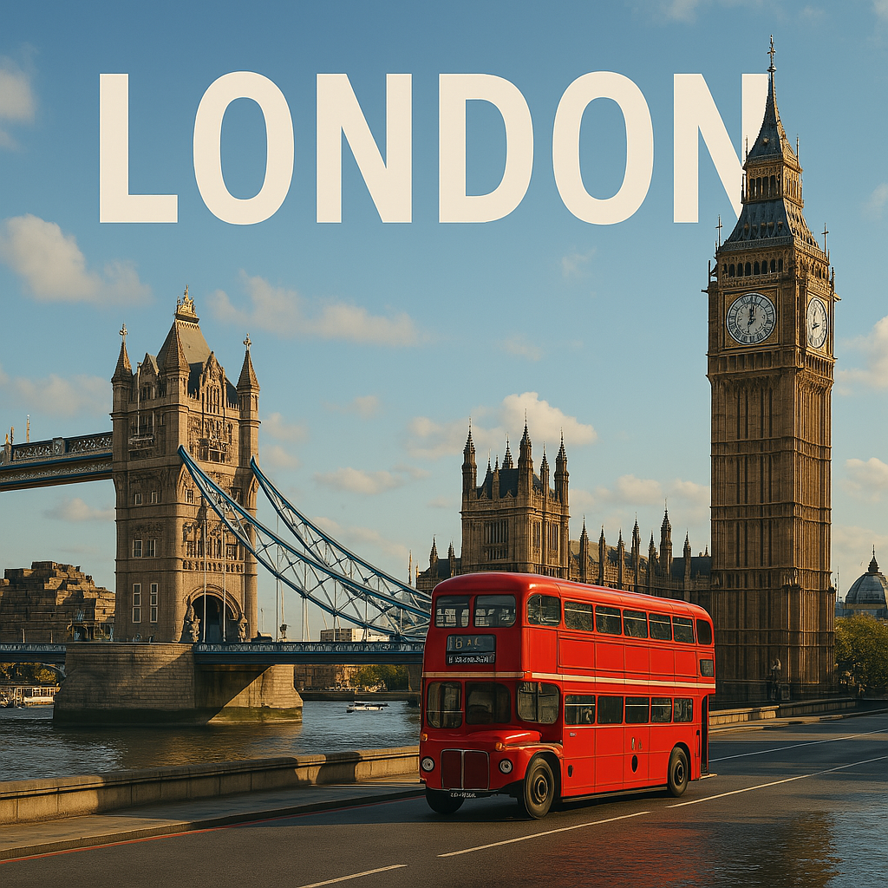

Londres
Londres est une ville cosmopolite et historique, connue pour Big Ben, la Tamise et Buckingham Palace.

Le savais-tu ? 🦊
Big Ben ne désigne pas la tour, mais la cloche située à l’intérieur ! 🔔
Petit Quiz 🧠
Quel fleuve traverse Londres ?
Carte interactive